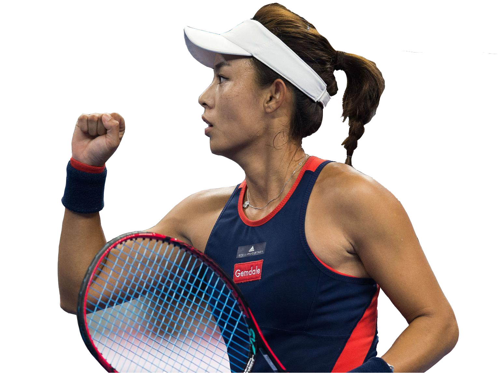

球 场 风 采
NEWS


首进世界排名前20
2018/11/05获得珠海赛亚军后，王蔷成为中国大陆网坛历史上，第四位闯进单打世界排名前20的金花选手。这一赛季进账159万美元超此前生涯总和。
王蔷负伤香港公开赛夺亚军
2018/10/14总奖金75万美元的WTA国际巡回赛香港公开赛展开最后决赛的争夺。王蔷虽然最后时刻挽救三个赛点，但还是以2-6/1-6不敌乌克兰00后新星雅斯特雷梅斯卡，无缘冠军。
职业高光TOP3:打败穆古鲁扎
2018/10/13在鏖战近三小时之后，王蔷以6（5）-7/6-4/7-5击败两届大满贯冠军穆古卢扎，打进了最近四站比赛中的第二个决赛。


中网王蔷首进四强，李娜之后第一人
2018/10/05王蔷对阵武网冠军、白俄罗斯猛女萨巴伦卡，两盘都在最后关键时刻取得破发，以7-5/7-5胜出，成为了2012年李娜后第一位打进中网女单四强的中国金花，半决赛对阵2号种子沃兹尼亚奇。

武网王蔷因伤含泪退赛
2018/09/28她的对手是1995年出生的爱沙尼亚新星康塔维特，后者今年战绩勇猛。第二盘前三局出现了互破局面，王蔷在1-2落后再次上场打了两分后，最终还是因伤选择退赛，无缘生涯最高级别决赛
广州赛王蔷横扫夺WTA第二冠
2018/09/222018年广州网球公开赛落下大幕，在女单决赛中，王蔷延续近来良好状态，以6-1/6-2横扫普汀塞娃，报法网遭对手逆转之仇，以五场比赛未失一盘的成绩斩获生涯第二个WTA女单冠军。